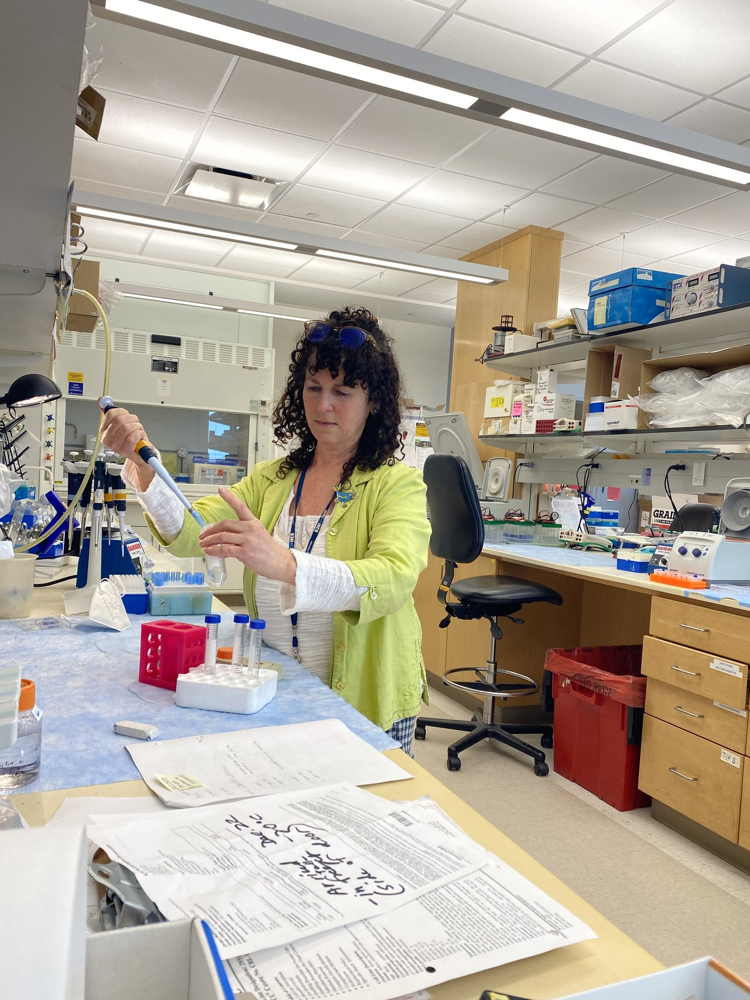
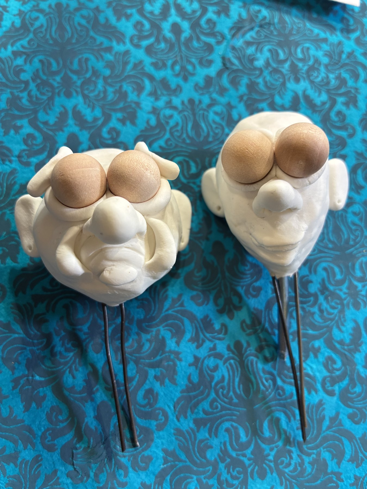
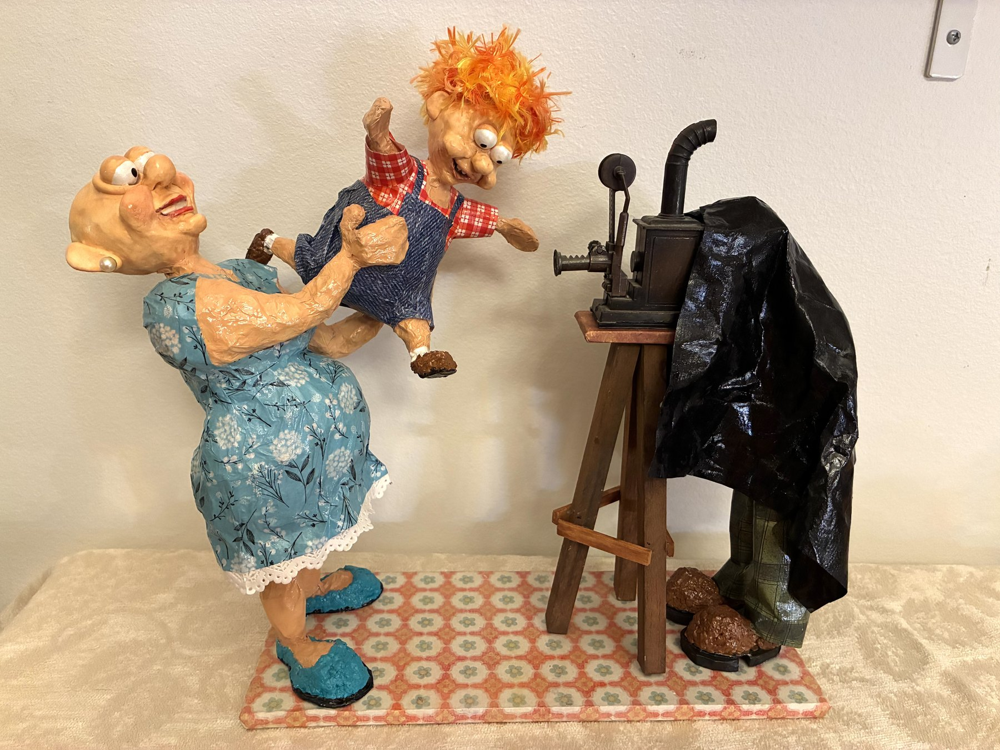
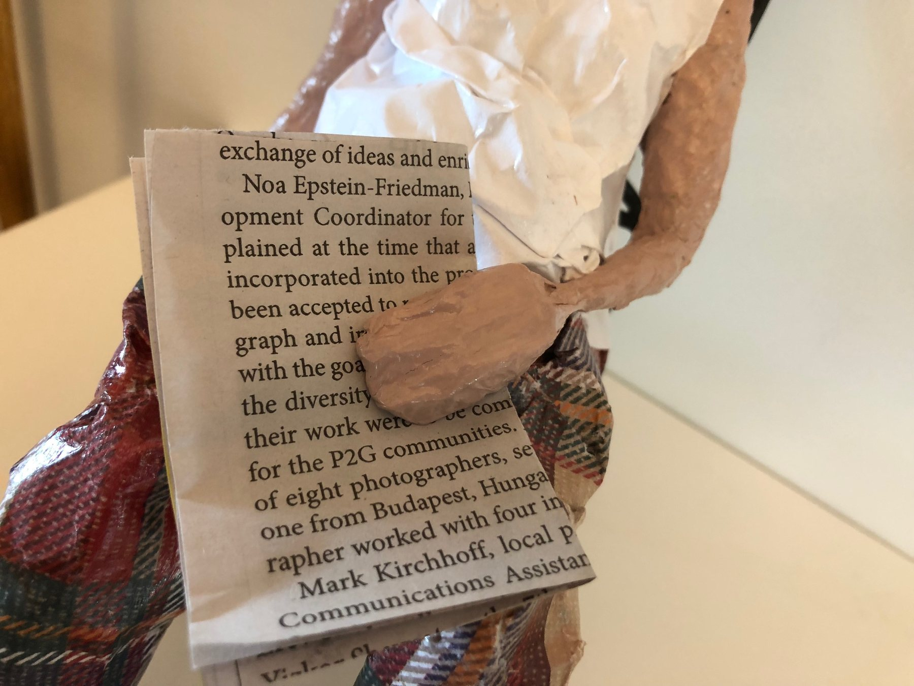
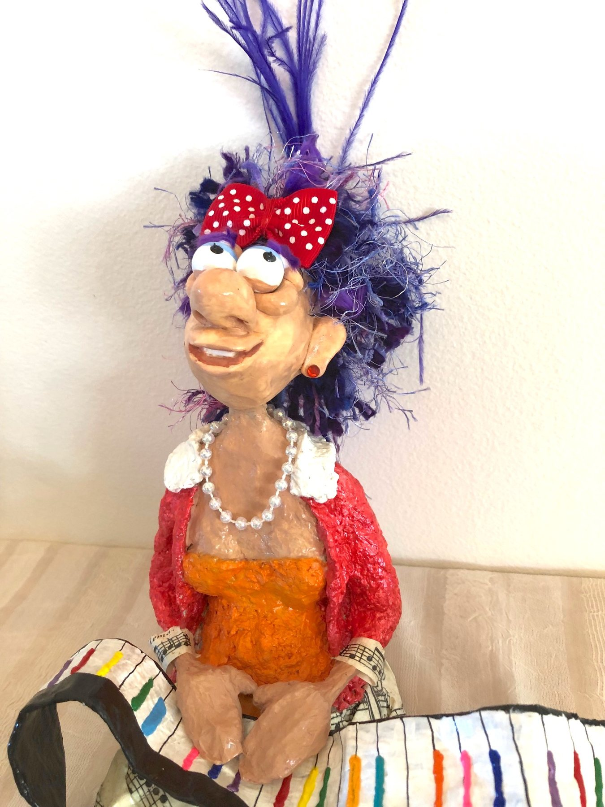
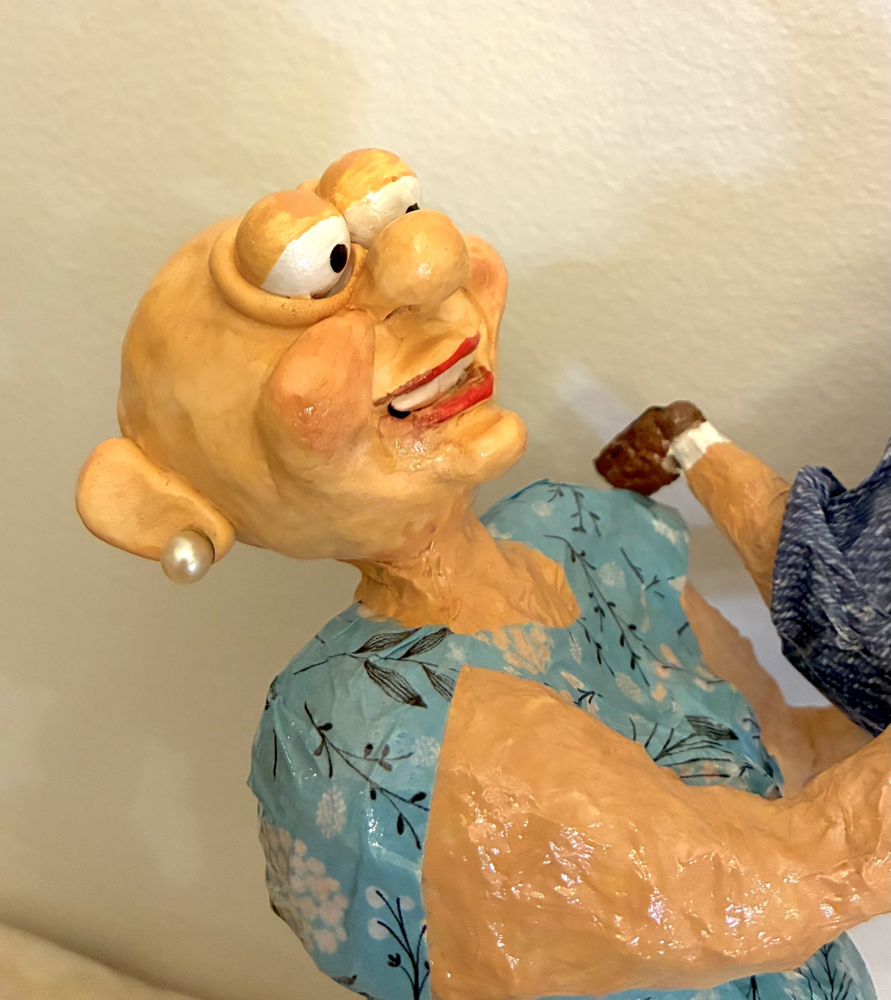
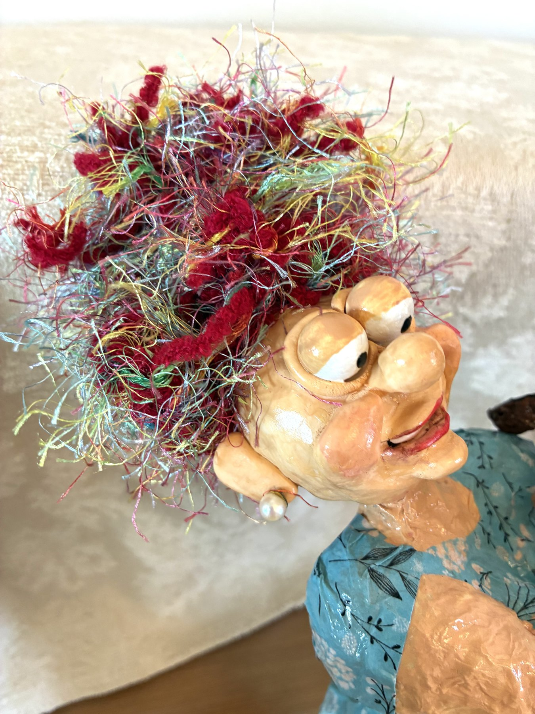
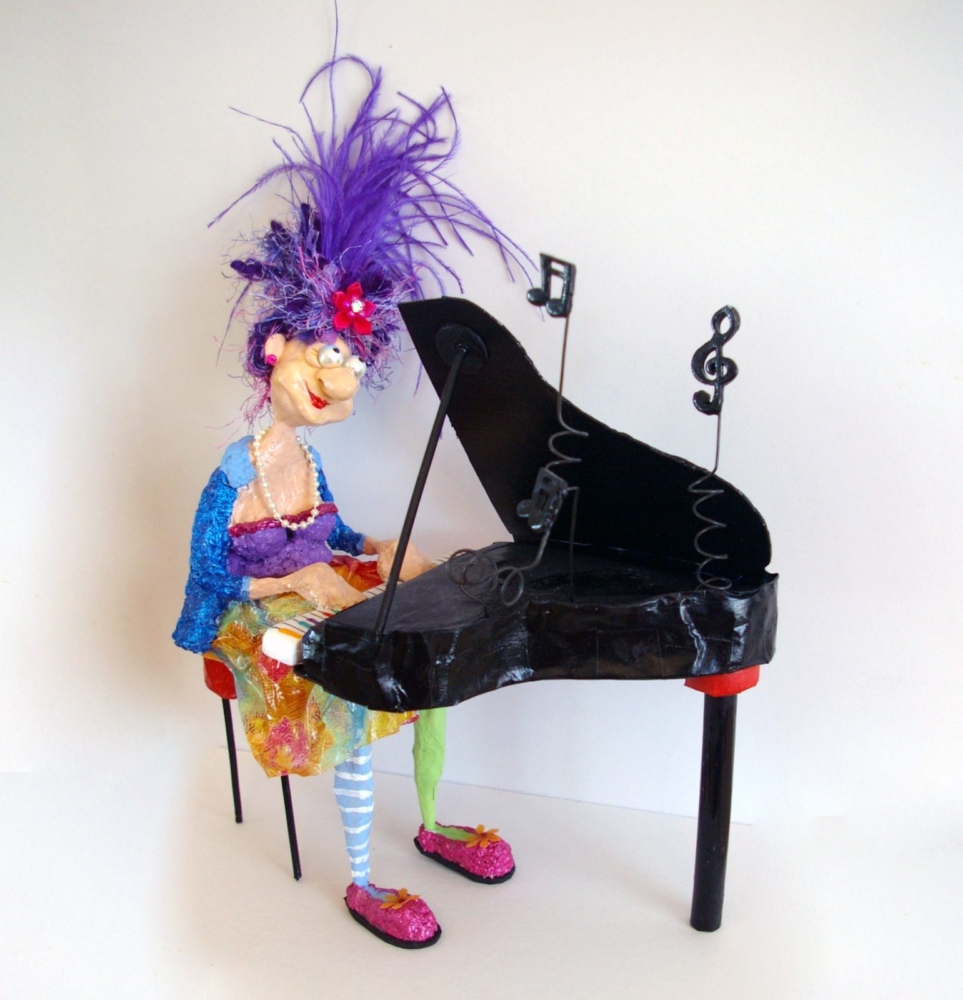

How I make them
From the lab bench to the art studio: every sculpture is built by hand from papier mâché made of recycled scientific papers, wire, clay and lots of color.

Step 1From the lab
My raw material comes from my other life. Printed scientific papers that we read and write in the lab are shredded into pulp, and lab pipettes and other small pieces get a second life as long legs and props.

 Step 2
Step 2Creating the face
Every figure begins with a ball of aluminum foil, covered with lightweight clay to shape the head. I then sculpt the facial features, bringing each face to life with its own unique expression. A brief bake in the oven hardens the clay. This is the stage where each character’s personality begins to emerge.

Step 3Building the body
The clay head is attached to a Styrofoam torso with wire. I then prepare the limbs from wire and attach them to the torso, creating a wire skeleton that gives the figure its pose and structure. The entire framework is then covered with paper mâché pulp, made from shredded paper, water, and a natural, non-toxic cellulose glue.

Step 4Smoothing the surface
Once the paper mâché has dried, I cover the sculpture with layers of tissue paper and cellulose glue, creating a smoother, more refined surface.



Step 5Color and finishing touches
The sculptures finally come to life through color. I paint them with acrylics, dress them in patterned paper, and finish them with a glossy coating. The very last touch is the hair, made from wool, which completes each character.

Step 6About three weeks later…
One sculpture takes around three weeks to finish. True to their raw material, the finished pieces stay surprisingly light.
Recycling at heart
Nothing goes to waste: the paper is recycled, sculptures dry in the sun or with the warmth of the house, and everyday objects are re-purposed — so there is minimal waste in the whole process.